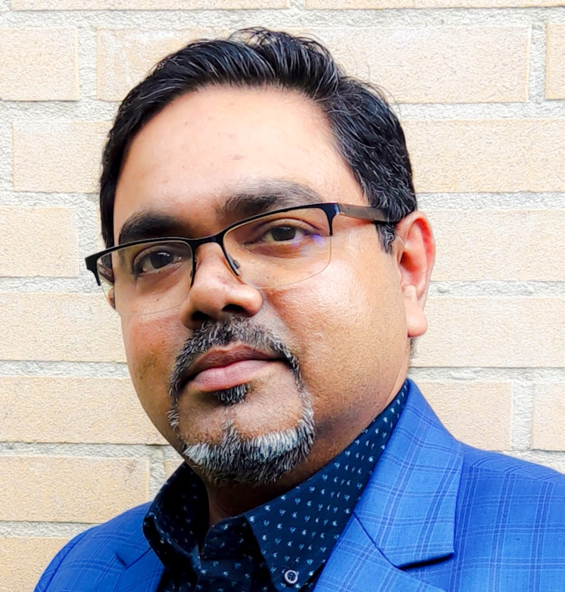

I study how seeds move — through fields, markets, gene banks, and digital platforms — and how AI can make that movement more resilient for smallholder farmers from the Sahel to the Indo-Gangetic Plains.

Senior Researcher & Seed Systems Advisor
Wageningen Social & Economic Research (WSER)
Wageningen University & Research
Integrated seed sector analysis, community seed banks, early generation seed production, and regulatory reform across Africa and Asia — in fragile states and stable markets alike.
RAG/LLM systems for multilingual farm advisory, digital seed portals, AI governance under the EU AI Act, and GDPR-compliant data workflows for development research.
Peer-reviewed publications, policy briefs, capacity-building courses, and field research across Uganda, Nigeria, South Sudan, Somaliland, Sudan, Myanmar, Bangladesh, and India.
Field research, advisory work, and active projects spanning two continents — always with the same question: how does quality seed reach the farmer who needs it most?
2026 · Conference
Presented on AI for local-language farm advisory services — how RAG/LLM systems can bridge the advisory gap for smallholder farmers in low-resource language contexts.
2026 · Working Paper
ISSD Africa working paper (Gupta & Vernooy, 2026) on community seed banks in Somaliland, South Sudan, and Sudan — seed security under protracted crisis conditions.
2025 · Infrastructure
Privacy-first local LLM stack — Mistral 7B + Gemma 4, BM25 hybrid retrieval, cross-encoder reranking — for processing sensitive research data at WUR.
2025 · Essay
An essay drawing a parallel between software bugs and neutral genetic mutation via Kimura's neutral theory — on AI errors, evolution, and the productive nature of noise.
My work traces a single thread across two decades: understanding how quality seed reaches the farmers who need it most, and removing the barriers — agronomic, institutional, and informational — that stand in the way.
I began with seed physiology at IARI New Delhi, moved through the private sector with Incotec, joined Bioversity International for fieldwork across the Indo-Gangetic plains, and have been at Wageningen since 2019, leading AI and digital innovation for WSER's seed systems portfolio.
Full Biography →Long reads on seed systems, AI ethics, colonial agricultural history, and the occasional digression into literature, cooking, and genetic mutation theory.